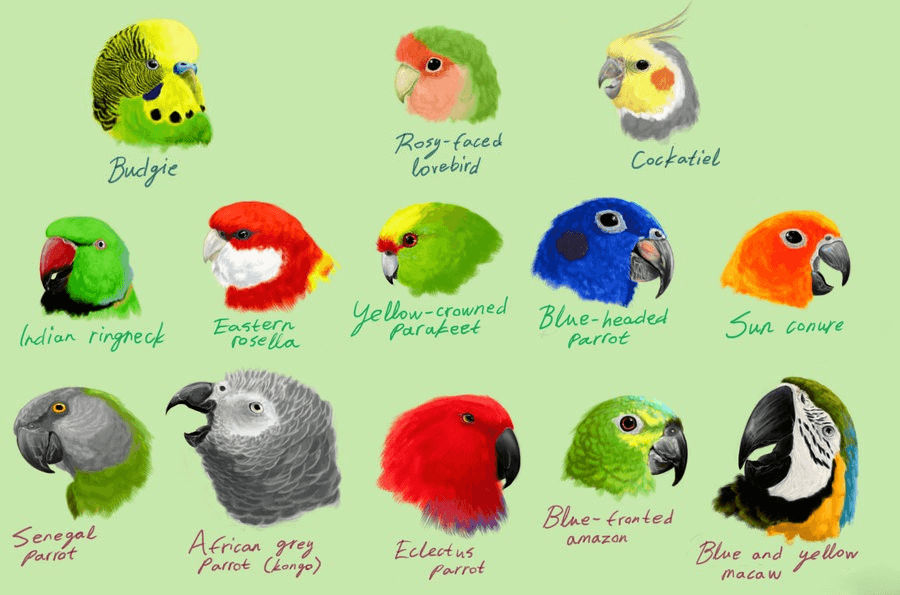

Alisterus king Parrot from wild

This image shows many species of Paroot
Parrots, also known as psittacines /ˈsɪtəsaɪnz/,[1][2] are birds of the roughly 393 species in 92 genera comprising the order Psittaciformes, found mostly in tropical and subtropical regions. The order is subdivided into three superfamilies: the Psittacoidea ("true" parrots), the Cacatuoidea (cockatoos), and the Strigopoidea (New Zealand parrots). One-third of all parrot species are threatened by extinction, with higher aggregate extinction risk (IUCN Red List Index) than any other comparable bird group.[3] Parrots have a generally pantropical distribution with several species inhabiting temperate regions in the Southern Hemisphere, as well. The greatest diversity of parrots is in South America and Australasia.
All parrots have curved beaks and all are zygodactyls, meaning they have four toes on each foot, two pointing forward and two projecting backward. Most parrots eat fruit, flowers, buds, nuts, seeds, and some small creatures such as insects. Parrots are found in warm climates all over most of the world.
Characteristic features of parrots include a strong, curved bill, an upright stance, strong legs, and clawed zygodactyl feet. Many parrots are vividly coloured, and some are multi-coloured. Most parrots exhibit little or no sexual dimorphism in the visual spectrum. They form the most variably sized bird order in terms of length. The most important components of most parrots' diets are seeds, nuts, fruit, buds, and other plant material. A few species sometimes eat animals and carrion, while the lories and lorikeets are specialised for feeding on floral nectar and soft fruits. Almost all parrots nest in tree hollows (or nest boxes in captivity), and lay white eggs from which hatch altricial (helpless) young.
Parrots, along with ravens, crows, jays, and magpies, are among the most intelligent birds, and the ability of some species to imitate human speech enhances their popularity as pets. Trapping wild parrots for the pet trade, as well as hunting, habitat loss, and competition from invasive species, has diminished wild populations, with parrots being subjected to more exploitation than any other group of birds. Measures taken to conserve the habitats of some high-profile charismatic species have also protected many of the less charismatic species living in the same ecosystems.